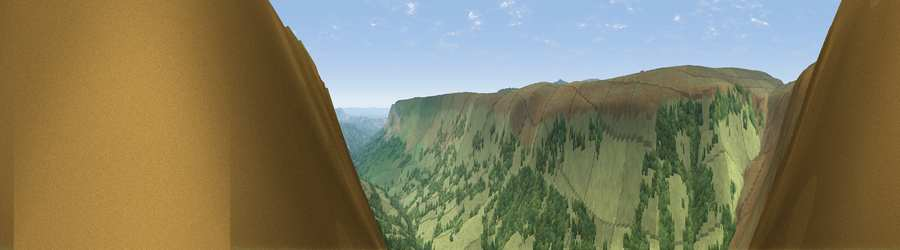

Viewpoint near Craswall
#1705 in England · top 5% of its area beats it · near Craswall · open accessWhere it is
The exact computed spot (SO 27938 33862). Click the marker for map links.
Public access: this spot lies on mapped open-access land (CRoW Act 2000) — you may roam here on foot. Computed from Natural England's CRoW access layer and OpenStreetMap rights of way — not the legal definitive map. Always verify locally.
The view, rendered

A 360° render of this exact spot computed from the terrain model, tree cover and land cover — summer colours, afternoon light, calibrated against photographs of famous viewpoints. Real trees, hedges and buildings will differ in detail.
The panorama
Grey silhouette: terrain skyline in each direction (720 bearings, Earth curvature and refraction included). Dashed green: skyline with trees (+15 m) and buildings (+8 m) as obstacles. Blue strip: how far the ground is visible on each bearing.
Where the view opens
Wedge length = distance to the farthest visible ground on that bearing (vegetation-aware). Rings at 10, 25 and 50 km.
What fills the view
68% grassland · 31% woodland · 1% cropland
Angular shares of the visible panorama (visual magnitude), not map area. Landscape diversity 0.30 (0–1 Shannon).
Key numbers
More beautiful places nearby
The staircase of upgrades: each row has a higher view potential than everything closer. Driving times are estimates from straight-line distance, calibrated against real road routing — check an actual route before setting out.
| Place | Direction | Drive | Score |
|---|---|---|---|
| Black Hill | NNW · 1 km | ~3 min | 79.8 |
| Viewpoint near Craswall | NW · 4 km | ~10 min | 81.5 |
| Garway Hill | ESE · 18 km | ~31 min | 84.6 |
| Millennium Hill | E · 48 km | ~69 min | 86.9 |
| Worcestershire Beacon | ENE · 50 km | ~71 min | 87.1 |
| Viewpoint near Bossington | SSW · 92 km | ~117 min | 88.3 |
| Selworthy Beacon | SSW · 93 km | ~118 min | 88.7 |
| Holdstone Hill | SW · 108 km | ~133 min | 90.2 |
51.99851, -3.05106 · source: screening · position refined by local search. Computed location — check access rights before visiting.